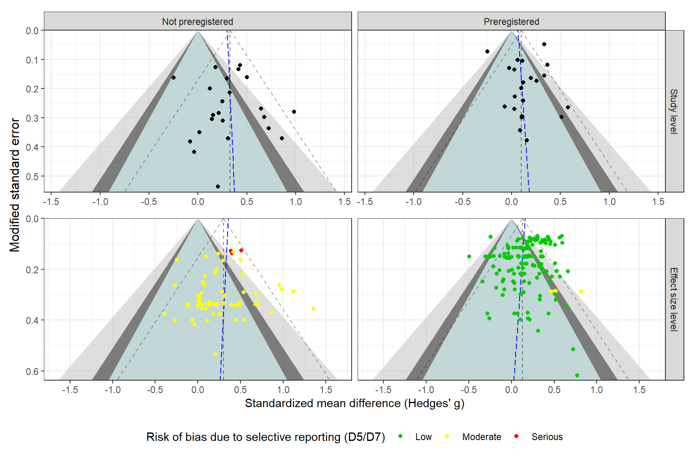

```{r packages}
#| code-fold: false
library(tidyverse)
library(robvis)
library(purrr)
library(metafor)
library(patchwork)
library(clubSandwich)
library(wildmeta)
library(gt)
library(metaselection)
library(DT)
library(kableExtra)
library(ggh4x)
library(puniform)
library(tidyverse) # for tidying
library(janitor) # for tidying variable names
library(boot) # for bootstrapping
library(tictoc)
# Loading in helper function used to calculate effect size and conduct the analysis
source("Helpers.R")
source("pub-bias-test-helpers.R")
```Publication bias testing in Dalgaard et al. (2025)
Used package
Data
```{r load-data}
#| code-fold: false
reint_ma_dat <-
readRDS("reint_ma_dat.rds") |>
mutate(
esid = 1:n(),
se_gt_pop = sqrt(vgt_pop),
Wse_pop = sqrt(Wgt_pop) # Change to Wgt_pop when created
)
#Secondary analysis
#mental_health_dat <-
# readRDS("mental_health_dat.rds") |>
# mutate(
# esid = 1:n(),
# se_gt_pop = sqrt(vgt_pop),
# Wse_pop = sqrt(Wgt_pop)
# )
```Funnel plots
Show the code
```{r, main-res}
#| eval: false
rho <- 0.8
V_mat <-
metafor::vcalc(
data = reint_ma_dat,
vi = vgt_pop,
cluster = study,
type = outcome_time,
grp1 = trt_name,
w1 = N_t,
grp2 = control,
w2 = N_c,
rho = rho
)
overall_res <-
rma.mv(
gt_pop,
V = V_mat,
random = ~ 1 | study / esid,
data = reint_ma_dat,
sparse = TRUE
) |>
robust(cluster = study, clubSandwich = TRUE)
overall_res
sub_res <-
rma.mv(
gt_pop ~ outcome_type - 1,
V = V_mat,
random = list(~ outcome_type | study, ~ outcome_type | esid),
struct = c("DIAG", "DIAG"),
data = reint_ma_dat,
sparse = TRUE
) |>
robust(cluster = study, clubSandwich = TRUE)
sub_res
# Mental health
# MHV: Conduct these tests, when the main analyses has been made
#V_mat_mental <- metafor::vcalc(
# data = mental_health_dat,
# vi = vgt_pop,
# cluster = study,
# type = outcome_time,
# grp1 = trt_name,
# w1 = N_t,
# grp2 = control,
# w2 = N_c,
# rho = rho
# )
#
#overall_res_mental <-
# rma.mv(
# gt_pop ~ + 1,
# V = V_mat_mental,
# random = ~ 1 | study / esid,
# data = mental_health_dat,
# sparse = TRUE
# ) |>
# robust(cluster = study, clubSandwich = TRUE)
#
#overall_res_mental
#
#sub_res_mental <-
# rma.mv(
# gt_pop ~ -1 + analysis_plan,
# V = V_mat_mental,
# random = list(~ analysis_plan | study, ~ analysis_plan | esid),
# struct = c("DIAG", "DIAG"),
# data = mental_health_dat,
# sparse = TRUE
# )
#
#sub_res_mental
```Overall
Show the code
```{r reint-overall-fp}
#| label: fig-reint-overall-fp
#| fig-cap: "Funnel plot across all reintegrational outcomes"
#| fig.width: 9
#| fig.height: 6
#| fig.retina: 2
#| message: false
## Overall average effect
rho <- 0.8
# CHE-ISCW
V_mat <- metafor::vcalc(
data = reint_ma_dat,
vi = Wgt_pop,
cluster = study,
type = outcome_time,
grp1 = trt_name,
w1 = N_t,
grp2 = control,
w2 = N_c,
rho = rho
)
W <- solve(V_mat)
# CHE
che <-
rma.mv(
yi = gt_pop,
V = V_mat,
random = ~ 1 | study / esid,
data = reint_ma_dat,
sparse = TRUE
) |>
robust(cluster = study, clubSandwich = TRUE)
# ISCW
# CHE-ISCW-RVE
che_iscw <-
rma.mv(
yi = gt_pop,
V = V_mat,
W = W,
mods = ~ prereg_chr + Wse_pop - 1,
random = ~ 1 | study / esid,
data = reint_ma_dat,
sparse = TRUE
) |>
robust(cluster = study, clubSandwich = TRUE)
## Preregistered vs. not preregistered
prereg_dat <-
reint_ma_dat |>
filter(conventional == 0)
V_mat_prereg <-
metafor::vcalc(
data = prereg_dat,
vi = Wgt_pop,
cluster = study,
type = outcome_time,
grp1 = trt_name,
w1 = N_t,
grp2 = control,
w2 = N_c,
rho = rho
)
W_prereg <- solve(V_mat_prereg)
egg_prereg <-
rma.mv(
yi = gt_pop,
V = V_mat_prereg,
W = W_prereg,
mods = ~ Wse_pop,
random = ~ 1 | study / esid,
data = prereg_dat,
sparse = TRUE
) |>
robust(cluster = study, clubSandwich = TRUE)
egg_prereg_res <-
tibble(
subgroup = "Preregistered",
egg_intercept = as.numeric(egg_prereg$b[1]),
egg_slope = as.numeric(egg_prereg$b[2])
)
notprereg_dat <-
reint_ma_dat |>
filter(conventional == 1)
V_mat_notprereg <-
metafor::vcalc(
data = notprereg_dat,
vi = Wgt_pop,
cluster = study,
type = outcome_time,
grp1 = trt_name,
w1 = N_t,
grp2 = control,
w2 = N_c,
rho = rho
)
W_notprereg <- solve(V_mat_notprereg)
egg_notprereg <-
rma.mv(
yi = gt_pop,
V = V_mat_notprereg,
W = W_notprereg,
mods = ~ Wse_pop,
random = ~ 1 | study / esid,
data = notprereg_dat,
sparse = TRUE
) |>
robust(cluster = study, clubSandwich = TRUE)
egg_notprereg_res <-
tibble(
subgroup = "Not preregistered",
egg_intercept = as.numeric(egg_notprereg$b[1]),
egg_slope = as.numeric(egg_notprereg$b[2])
)
egg_res_subgrouped <- bind_rows(egg_prereg_res, egg_notprereg_res)
egg_res_subgrouped
# PESCE+ model
prereg_arg <-
.rma_arg_tbl(
yi = "gt_pop",
vi = "vgt_pop",
covars = "prereg_chr",
model = "SCEp",
r = 0.8,
data = reint_ma_dat,
type = "categorical"
); prereg_arg
# PESCEp+
subgroup_means <- pmap(.l = prereg_arg, .f = .PESCE_RVE) |> list_rbind()
#subgroup_means <- .SCEp(mod = prereg_chr, data = reint_ma_dat)
subgroup_dat <-
reint_ma_dat |>
summarise(
gt_pop = mean(gt_pop),
Wse_pop = mean(Wse_pop),
outcome_type = outcome_type[1],
.by = prereg_chr
) |>
bind_cols(subgroup_means[c(3,2), c(2, 14:18)], egg_res_subgrouped) |>
mutate(slope_low = qnorm(0.025), slope_high = qnorm(0.975), level = "Effect size level")
y_lim_exp1 <- max(reint_ma_dat$Wse_pop) + 0.02
funnel_exp1 <- tribble(
~ x90, ~ x95, ~ x99, ~ y,
0, 0, 0, 0,
qnorm(0.05) * y_lim_exp1, qnorm(0.025) * y_lim_exp1, qnorm(0.005) * y_lim_exp1, y_lim_exp1,
qnorm(0.95) * y_lim_exp1, qnorm(0.975) * y_lim_exp1, qnorm(0.995) * y_lim_exp1, y_lim_exp1,
0, 0, 0, 0
)
alpha_line <- 0.5
polygon_fill <- c("grey", "grey10", "lightcyan")
mean_line <- "dashed"
reg_test <- TRUE
reg_line <- "longdash"
reg_color <- "blue"
breaks_y <- seq(-3, 3, 0.5)
es_level_fp <-
reint_ma_dat |>
mutate(
level = "Effect size level",
report_bias = case_when(
rob_tool == "RoB2" & D5 == "Low" ~ "Low",
rob_tool == "RoB2" & str_detect(D5, "Some") ~ "Moderate",
rob_tool == "RoB2" & str_detect(D5, "High") ~ "Serious",
.default = D7
),
report_bias = factor(report_bias, levels = c("Low", "Moderate", "Serious"))
) |>
ggplot() +
geom_polygon(data = funnel_exp1, aes(x = y, y = x99), fill = polygon_fill[1], alpha = 0.5) +
geom_polygon(data = funnel_exp1, aes(x = y, y = x95), fill = polygon_fill[2], alpha = 0.5) +
geom_polygon(data = funnel_exp1, aes(x = y, y = x90), fill = polygon_fill[3], alpha = 0.7) +
geom_abline(data = subgroup_dat, aes(slope = slope_high, intercept = avg_effect), linetype = mean_line, alpha = alpha_line) +
geom_hline(data = subgroup_dat, aes(yintercept = avg_effect), linetype = mean_line, alpha = alpha_line) +
geom_abline(data = subgroup_dat, aes(slope = slope_low, intercept = avg_effect), linetype = mean_line, alpha = alpha_line) +
geom_abline(data = subgroup_dat, aes(slope = -egg_slope, intercept = egg_intercept), linetype = reg_line, color = reg_color) +
geom_point(aes(Wse_pop, gt_pop, color = report_bias), alpha = 1, size = 1.5) +
coord_flip() +
facet_grid(level~prereg_chr) +
scale_x_reverse(limits = c(y_lim_exp1, 0.0), expand = c(0,0)) +
scale_y_continuous(breaks = breaks_y) +
scale_color_manual(
values = c("Low" = "green3", "Moderate" = "yellow", "Serious" = "red")
) +
theme_bw() +
labs(x = "Modified standard error",
y = "Standardized mean difference (Hedges' g)",
color = "", shape = "") +
theme(
legend.position = "bottom",
strip.text.x = element_blank()
) +
labs(color = "Risk of bias due to selective reporting (D5/D7)") +
guides(col = guide_legend(nrow = 1))
# Make aggregate plot
reint_dat_agg <-
reint_ma_dat |>
escalc(measure = "SMD", yi = gt_pop, vi = Wgt_pop, data = _) |>
aggregate.escalc(cluster = study, rho = 0.8) |>
mutate(
Wse_pop = sqrt(vi)
)
prereg_dat_agg <-
reint_dat_agg |>
as_tibble() |>
dplyr::filter(conventional == 0)
egg_prereg_agg <-
rma(yi = yi, vi = vi, data = prereg_dat_agg, control=list(stepadj=0.5, maxiter=1000)) |>
regtest()
egg_prereg_agg_res <-
tibble(
subgroup = "Preregistered",
egg_intercept = as.numeric(egg_prereg_agg$fit$b[1]),
egg_slope = as.numeric(egg_prereg_agg$fit$b[2])
)
notprereg_dat_agg <-
reint_dat_agg |>
as_tibble() |>
dplyr::filter(conventional == 1)
egg_notprereg_agg <-
rma(yi = yi, vi = vi, data = notprereg_dat_agg) |>
regtest()
egg_notprereg_agg_res <-
tibble(
subgroup = "Not preregistered",
egg_intercept = as.numeric(egg_notprereg_agg$fit$b[1]),
egg_slope = as.numeric(egg_notprereg_agg$fit$b[2])
)
egg_res_agg_subgrouped <- bind_rows(egg_notprereg_agg_res, egg_prereg_agg_res)
egg_res_agg_subgrouped
means_agg <-
rma(yi, vi, mods = ~ prereg_chr - 1, data = reint_dat_agg) |>
robust(cluster = study, clubSandwich = TRUE)
subgroup_means_agg <-
tibble(
Moderator = c("Not preregistered", "Preregistered"),
avg_effect = as.numeric(means_agg$b),
LL = as.numeric(means_agg$ci.lb),
UL = as.numeric(means_agg$ci.ub)
)
subgroup_dat_agg <-
reint_dat_agg |>
summarise(
gt_pop = mean(gt_pop),
Wse_pop = mean(Wse_pop),
outcome_type = outcome_type[1],
.by = prereg_chr
) |>
arrange(prereg_chr) |>
bind_cols(subgroup_means_agg, egg_res_agg_subgrouped) |>
mutate(slope_low = qnorm(0.025), slope_high = qnorm(0.975), level = "Study level")
#subgroup_dat <-
# reintergation_dat |>
# summarise(
# gt = mean(gt),
# Wse = mean(Wse),
# analysis_plan = analysis_plan[1],
# .by = prereg_chr
# ) |>
# bind_cols(subgroup_means[2:3,], egg_res_subgrouped) |>
# mutate(slope_low = qnorm(0.025), slope_high = qnorm(0.975), level = "Effect size level")
y_lim_exp2 <- max(reint_dat_agg$Wse_pop) + 0.02
y_lim_exp2
funnel_exp2 <- tribble(
~ x90, ~ x95, ~ x99, ~ y,
0, 0, 0, 0,
qnorm(0.05) * y_lim_exp2, qnorm(0.025) * y_lim_exp2, qnorm(0.005) * y_lim_exp2, y_lim_exp2,
qnorm(0.95) * y_lim_exp2, qnorm(0.975) * y_lim_exp2, qnorm(0.995) * y_lim_exp2, y_lim_exp2,
0, 0, 0, 0
)
study_level_fp <-
reint_dat_agg |>
mutate(level = "Study level") |>
ggplot() +
geom_polygon(data = funnel_exp2, aes(x = y, y = x99), fill = polygon_fill[1], alpha = 0.5) +
geom_polygon(data = funnel_exp2, aes(x = y, y = x95), fill = polygon_fill[2], alpha = 0.5) +
geom_polygon(data = funnel_exp2, aes(x = y, y = x90), fill = polygon_fill[3], alpha = 0.7) +
geom_abline(data = subgroup_dat_agg, aes(slope = slope_high, intercept = avg_effect), linetype = mean_line, alpha = alpha_line) +
geom_hline(data = subgroup_dat_agg, aes(yintercept = avg_effect), linetype = mean_line, alpha = alpha_line) +
geom_abline(data = subgroup_dat_agg, aes(slope = slope_low, intercept = avg_effect), linetype = mean_line, alpha = alpha_line) +
geom_abline(data = subgroup_dat_agg, aes(slope = -egg_slope, intercept = egg_intercept), linetype = reg_line, color = reg_color) +
geom_point(aes(Wse_pop, gt_pop), alpha = 1, size = 1.5) +
scale_color_brewer(type = "qual", palette = 2) +
coord_flip() +
facet_grid(level~prereg_chr) +
scale_x_reverse(limits = c(y_lim_exp2, 0.0), expand = c(0,0)) +
scale_y_continuous(breaks = breaks_y) +
theme_bw() +
theme(
axis.title = element_blank()
)
ylab <- es_level_fp$labels$x
study_level_fp$labels$x <- es_level_fp$labels$x <- ""
#png("plots/funnel plots (overall effect) across types of registration.png", width = 8, height = 5.5, res = 300, unit = "in")
study_level_fp / es_level_fp
grid::grid.draw(grid::textGrob(ylab, y = 0.6, x = 0.02, rot = 90))
#dev.off()
```# A tibble: 2 × 3
subgroup egg_intercept egg_slope
<chr> <dbl> <dbl>
1 Preregistered 0.1584 -0.2107
2 Not preregistered 0.3538 -0.1464
# A tibble: 1 × 9
formula es var rand structure rho data model table
<list> <chr> <chr> <list> <list> <dbl> <list> <chr> <chr>
1 <formula> gt_pop vgt_pop <list [2]> <chr [2]> 0.8 <tibble [202 × 80]> SCEp categorical
# A tibble: 2 × 3
subgroup egg_intercept egg_slope
<chr> <dbl> <dbl>
1 Not preregistered 0.3012 0.1326
2 Preregistered 0.06563 0.2031
[1] 0.5555445

Show the code
```{r reint-overall-fp}
prereg_dat_cano <-
reint_ma_dat |>
filter(conventional == 0) |>
mutate(
cano_vindel = if_else(str_detect(study, "Cano"), 1, 0),
cano_vindel = factor(cano_vindel)
)
V_mat_prereg_cano <-
metafor::vcalc(
data = prereg_dat_cano,
vi = Wgt_pop,
cluster = study,
type = outcome_time,
grp1 = trt_name,
w1 = N_t,
grp2 = control,
w2 = N_c,
rho = rho
)
W_prereg_cano <- solve(V_mat_prereg_cano)
egg_prereg_cano <-
rma.mv(
yi = gt_pop,
V = V_mat_prereg_cano,
W = W_prereg_cano,
mods = ~ Wse_pop + cano_vindel,
random = ~ 1 | study / esid,
data = prereg_dat_cano,
sparse = TRUE
) |>
robust(cluster = study, clubSandwich = TRUE)
egg_prereg_res_cano <-
tibble(
subgroup = "Preregistered",
egg_intercept = as.numeric(egg_prereg_cano $b[1]),
egg_slope = as.numeric(egg_prereg_cano$b[2])
)
subgroup_dat_cano <-
prereg_dat_cano |>
summarise(
gt_pop = mean(gt_pop),
Wse = mean(Wse_pop),
outcome_type = outcome_type[1],
.by = prereg_chr
) |>
bind_cols(subgroup_means[3, c(2, 14:18)], egg_prereg_res_cano) |>
mutate(slope_low = qnorm(0.025), slope_high = qnorm(0.975))
y_lim_exp_cano <- max(prereg_dat_cano$Wse_pop) + 0.02
y_lim_exp_cano
funnel_exp_cano <- tribble(
~ x90, ~ x95, ~ x99, ~ y,
0, 0, 0, 0,
qnorm(0.05) * y_lim_exp_cano, qnorm(0.025) * y_lim_exp_cano, qnorm(0.005) * y_lim_exp_cano, y_lim_exp_cano,
qnorm(0.95) * y_lim_exp_cano, qnorm(0.975) * y_lim_exp_cano, qnorm(0.995) * y_lim_exp_cano, y_lim_exp_cano,
0, 0, 0, 0
)
alpha_line <- 0.5
polygon_fill <- c("grey", "grey10", "lightcyan")
mean_line <- "dashed"
reg_test <- TRUE
reg_line <- "longdash"
reg_color <- "blue"
breaks_y <- seq(-3, 3, 0.5)
cano_fp <-
prereg_dat_cano |>
mutate(alpha_val = if_else(cano_vindel == 1, 0.9, 1)) |>
ggplot() +
geom_polygon(data = funnel_exp_cano, aes(x = y, y = x99), fill = polygon_fill[1], alpha = 0.5) +
geom_polygon(data = funnel_exp_cano, aes(x = y, y = x95), fill = polygon_fill[2], alpha = 0.5) +
geom_polygon(data = funnel_exp_cano, aes(x = y, y = x90), fill = polygon_fill[3], alpha = 0.7) +
geom_abline(data = subgroup_dat_cano, aes(slope = slope_high, intercept = avg_effect), linetype = mean_line, alpha = alpha_line) +
geom_hline(data = subgroup_dat_cano, aes(yintercept = avg_effect), linetype = mean_line, alpha = alpha_line) +
geom_abline(data = subgroup_dat_cano, aes(slope = slope_low, intercept = avg_effect), linetype = mean_line, alpha = alpha_line) +
geom_abline(data = subgroup_dat_cano, aes(slope = -egg_slope, intercept = egg_intercept), linetype = reg_line, color = reg_color) +
geom_point(aes(Wse_pop, gt_pop, col = cano_vindel, alpha = alpha_val), size = 1.5) +
scale_color_brewer(type = "qual", palette = 2) +
coord_flip() +
facet_grid(~prereg_chr) +
scale_x_reverse(limits = c(y_lim_exp_cano, 0.0), expand = c(0,0)) +
scale_y_continuous(breaks = breaks_y) +
theme_bw() +
labs(x = "Modified standard error",
y = "Standardized mean difference (Hedges' g)",
color = "", shape = "") +
theme(
legend.position = "bottom"
) +
labs(color = "Cano-vindel") +
guides(col = "none", alpha = "none")
#png("plots/funnel plots (overall effect) without Cano-Vindel.png", width = 8, height = 5.5, res = 300, unit = "in")
cano_fp
#dev.off()
```[1] 0.6371993
Show the code
```{r reint-overall-fp-mental}
#| eval: false
#| label: fig-reint-overall-fp-mental
#| fig-cap: "Funnel plot across all mental health outcomes"
#| fig.width: 9
#| fig.height: 6
#| fig.retina: 2
#| message: false
overall_mean_mental<- as.numeric(overall_res_mental$b)
y_lim_exp1 <- max(mental_health_dat$se_gt_pop) + 0.02
funnel_exp1 <- tribble(
~ x90, ~ x95, ~ x99, ~ y,
0, 0, 0, 0,
qnorm(0.05) * y_lim_exp1, qnorm(0.025) * y_lim_exp1, qnorm(0.005) * y_lim_exp1, y_lim_exp1,
qnorm(0.95) * y_lim_exp1, qnorm(0.975) * y_lim_exp1, qnorm(0.995) * y_lim_exp1, y_lim_exp1,
0, 0, 0, 0
)
# Egg CHE-ISCW-RVE ------------
V_mat_ISCW <- metafor::vcalc(vi = Wgt_pop, cluster = study, obs = esid, data = reintegration_dat, rho = rho)
W_ISCW <- solve(V_mat_ISCW)
egg_ISCW <-
rma.mv(
yi = gt_pop,
V = V_mat_ISCW,
W = W_ISCW,
mods = ~ Wse_pop,
random = ~ 1 | study / esid,
data = reintegration_dat,
sparse = TRUE
) |>
robust(cluster = study, clubSandwich = TRUE)
#----------------------------------
reintegration_dat |>
ggplot() +
geom_polygon(data = funnel_exp1, aes(x = y, y = x99), fill = polygon_fill[1], alpha = 0.5) +
geom_polygon(data = funnel_exp1, aes(x = y, y = x95), fill = polygon_fill[2], alpha = 0.5) +
geom_polygon(data = funnel_exp1, aes(x = y, y = x90), fill = polygon_fill[3], alpha = 0.7) +
geom_abline(slope = qnorm(0.975), intercept = overall_mean, linetype = mean_line, alpha = alpha_line) +
geom_hline(yintercept = overall_mean, linetype = mean_line, alpha = alpha_line) +
geom_abline(slope = qnorm(0.025), intercept = overall_mean, linetype = mean_line, alpha = alpha_line) +
geom_abline(slope = as.numeric(egg_ISCW$b[2]), intercept = as.numeric(egg_ISCW$b[1]), linetype = reg_line, color = reg_color) +
# Add prereg and rob to plot
geom_point(aes(se_gt_pop, gt_pop), alpha = 1, size = 1.2) +
scale_color_brewer(type = "qual", palette = 2) +
coord_flip() +
facet_grid2(~ outcome_construct) +
scale_x_reverse(limits = c(y_lim_exp1, 0.0), expand = c(0,0)) +
#scale_y_continuous(breaks = breaks_y) +
theme_bw() +
labs(x = "Standard error (adjusted)",
y = "Standardized mean difference (Hedges' g)",
color = "", shape = "") +
theme(legend.position = "bottom")
```References
Dalgaard, N. T., Flensborg Jensen, M. C., Bengtsen, E., Krassel, K. F., & Vembye, M. H. (2025) Group‐based community interventions to support the social reintegration of marginalised adults with mental illness. A Systematic Review and meta-analysus. Campbell Systematic Reviews, 18(3), e1254. https://doi.org/10.1002/cl2.1254